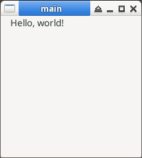

main.java
import org.eclipse.swt.SWT;
import org.eclipse.swt.widgets.Display;
import org.eclipse.swt.widgets.Shell;
import org.eclipse.swt.widgets.Label;
public class main {
public static void main(String[] args) {
Display display = new Display();
Shell shell = new Shell(display);
shell.setText("main");
shell.setSize(320, 240);
Label label = new Label(shell, SWT.CENTER);
label.setText("Hello, world!");
label.setBounds(0, 0, 100, 100);
shell.open();
while (!shell.isDisposed()) {
if (!display.readAndDispatch()) {
display.sleep();
}
}
display.dispose();
}
}
編譯、執行
$ java -version
java version "24.0.1" 2025-04-15
$ javac -cp swt.jar main.java
$ java -cp .:swt.jar main
